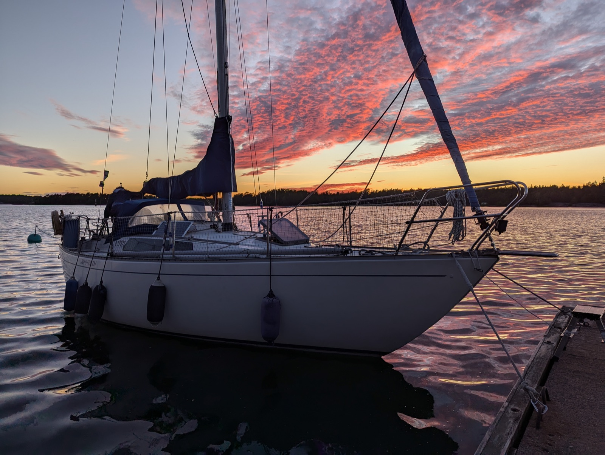

S/Y Jonnekin

History of the boat herself — a The Jon 30.
(Build year, yard, previous owners, the story of the name.)
Where she is now
Live AIS position (MMSI 230186920, callsign OHA5864), shown whenever her transponder is within range of a coastal receiver. Also on VesselFinder and MarineTraffic.